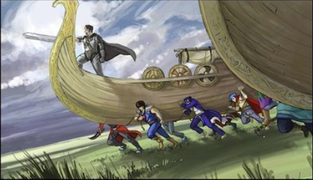
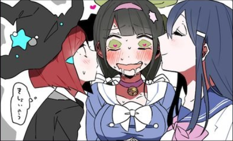

There are some things you just shouldn't have to pay for; consider these on the house. You can turn them on or off at any given time at your discretion. [Time has Stopped], for example, causes problems if people enter/leave the Zone with it on.
[Infinite Life]
Surprisingly easy to grant, actually. With this, you and anyone else in the Zone can't die, can't feel undesired pain, won't age, and will feel healthy and fit. Diseases/injuries that heal on their own still do while in the Zone, too.
[Infinite Stamina]
You don't tire out or get winded if you don't want to. If you do want to, you can make yourself tired (for example, to enhance cuddling). Applies to sexual stamina, as well. "Lasting forever" is no big deal.
[Forever Clean]
All things cleanliness are automatic and swift in the Zone. Nothing gets dirty or smells bad. No one needs to use the restroom, and women don't experience their cycle while in the Zone. Dishes get cleaned and blankets fold themselves.
[Time has Stopped]
Time in the Zone will pass about 30,000,000 times more quickly than the outside, effectively freezing time. For every single year in the Zone, about 1 second outside will pass. Your tiny lunch break is now 18 centuries, if you like.
[Room Essentials]
Any furniture or hookups necessary for a regular home, provided free of charge. Free water and electricity/gas, climate control, light fixtures, a bed, kitchenette with unlimited basic ingredients, etc.
[Existential Sentinel]
Basically just a guard that won't do anything but make sure you stay sane by providing its existence and occasionally doing small favors for you in case you create a Zone where it's otherwise eerily empty. Not a "friend," but useful.
Go ahead and pick what your Zone looks like. This is mostly an aesthetic choice. You can have as big of or as many rooms as you like in whatever arrangement you like, but don't go overboard. It is a little taxing for me. You can also specify little details about the room that aren't covered, like if you'd like them to be connected by a particular kind of door. Go hog wild.
Decide how you're going to enter/exit the Zone. Please note: Physical items are soulbound and unbreakable. People can eject themselves from the Zone at any time, reappearing where they were before entering, and you can close off your Zone to entry/eject others if need be. If there's somehow no physical room left in the Zone, the Zone auto-ejects everyone.
Your Zone would be pretty empty with just furniture, so I have a few options that I think are pretty fucking snazzy. I don't care if you want to turn it into a gun range or an anime-binging pod. As long as you're having fun, I'm happy. You get 15 items. Don't get too attached. There's a few special offers later that cost items. Items can be duped at will.
[Auto-/ck/]
You get an infinite amount of delicious, magically-healthy food, drinks, snacks, candy, desserts, and whatever else you want like that to any arbitrary specifications. Pig out. Includes a full kitchen, if you want to make it yourself.
[Jam Session]
A soundproofed music room with essentially every instrument ever, plus a recording booth, mixing station, amps, a stage, and enough computers loaded with composition software to drive you wild, plus an Al audience!
[200% Comfy]
Infinite blankets, pillows, mattresses, sleeping bags, robes, towels, sleeping pads, futons, sheets, blankets-with-sleeves, and stuffed animals, full stop. Have as many as you want, and then have some more. LITERAL PILLOW OCEANS.
[Normie Station]
A big entertainment center with a giant TV, excellent surround sound, and an Omni-Netflix that has every single movie and TV show produced, ever. It updates with new things as they come out in real time.
[Gaymen Piisii]
A self-upgrading, god-tier gaining rig with a complete collection of PC video games, browsable by any criteria you set. It also possesses ideal versions of all software you care to use (CAD or PS, for example). Perfect peripherals, too.
[The Rest]
A grand, perpetually-updated collection of console video games, said consoles, vidya paraphernalia, all kinds of peripherals, and just about every collector's edition you could ever want. Free TV if you didn't pick the Normiestation.
[Survival of the /fit/test]
An unholy combo of everything /fit/ and /sp/ could literally ever want, from workout weights to a gladiatorial blood sports arena. If it's gotta do with exercise, then it'll be here. Free AI players at any skill level you desire when you need them.
[Fully Loaded]
A personal favorite. A truly enormous room filled with guns, containing every single model of gun there is, with extensive aftermarket parts as well. Comes with an indoor range. Infinite ammo, too. No bandanna required.
[/diy/Zone]
A room with unlimited raw resources and industrial tools for you to forge, cut, saw, grind, weld, bend, nail, fit, engrave, and work into whatever you possibly can. A place of true zen for any DIY specialist.
[FUCKING NERDS]
Tabletop game supplies and anything you need to LARP, in addition to model kits and paints. Most importantly, though, it includes a plethora of fancy and custom dice. You could swim in a pool of dice, if you wanted. Godlike AI GM included.
[/lit/ As Heck]
All non-secret literature ever published, available in both a physical library format and in ebook format. Even includes destroyed works like those at the Library of Alexandria. Works are translated for you as necessary.
[/o/ Hell Yeah]
A racetrack up to 100 miles long and a fleet of all the cars known to man. Anything a car enthusiast could want. Free gas, oil, ma n ta ne lice, parts, etc. Includes fictional, physics-defying vehicles, like F-Zero vehicles, if you so choose.
[/toy/time]
A collection of toys and figurines that would make a weeb nerd explode in his pants. Standard deal; if it exists, it's there. Taking this option also will make the Existential Sentinel occasionally make you custom figurines, if you want.
[L-LEWD!!]
Anything you need to get your rocks off. Fetish-wear, fucking machines, toys, vibrators, porn, bondage equipment, aphrodisiacs, etc. It's all here for you. Best enjoyed in co-op. Allows the Sentinel to draw you custom porn/ecchi art.
[/fa/bulous]
It's what you expect. Clothes, makeup, shoes, and honestly tons of stuff that I don't even know what the hell it is. Literally anything /fa/ would find useful in any context, except maybe the ability to get laid (LOL).
[Ocean Man]
A huge wavepool, Jacuzzis, squirt guns, tolls of swimwear, wetsuits, etc. If you pick the option [Thrill Ride], this also comes with a free water park for you to use. Required for bodies of water other than rivers in the >>>/out/ option below.
[Thrill Ride]
Your own personal theme park (rather, just the rides, really, but that's what you're there for, usually). Roller coasters without lines galore, and plenty of kiddy rides when your stomach gets woozy. Can get monthly redesigns as you like.
[Aesthetics]
Basically just about anything that's otherwise useless but looks nice. Nice wallpaper, potted plants, hanging works of art strewn about, fancy furniture, plush rugs. Even helps line the track in Vo/ Hell Yeah] with trees to make it look natural.
[Cosmos in a jar]
A jar that contains a fluid-like field that modulates gravity and offers endlessly shifting views of space and the universe. Will spread as far as you like or retreat in response to your desires, and gets sucked back into the jar if you close the lid.
[SmartCloud]
A happy little cloud that looks like it was ordained by Bob fucking Ross himself that'll emit any kind of weather you want, even, strangely, pure sunshine. Don't ask me how. It's useful for replicating weather effects indoors. Can grow to any size.
[The Nuclear Option]
A button that causes all-out war to burst in out of nowhere in the Zone. Specify all you like, down to tech level, who the belligerents are, how the battle's fought, or even temporary laws of physics in case you want full anime war. "Death"=respawn.
[Silent Zone]
A magic portal-mirror that will take your precious Zone and turn it into a nonlethal nightmare, making it into a haunted house. The mirror can't talk back, but you can give it specific requests in case you have any.
[The Mindscrew Machine]
An incomprehensibly advanced machine that allows you granular control over peoples' memories as if they were a file-system. Creates extensive backups, too. Only works on the willing. Useful for those prone to existential dread.
[ZoneBook.zn]
A time-bending social network for Zone-owners alone, where you can all just hang, post gay pics, invite each other to your 'Zones, or do whatever the fuck else you can on a normal site. Lets you play multiplayer games vs. other Zone-owners, too.

>>>/out/(Cost 2 item slots)

>>>/friends/(Cost 3 item slots)
There are a few more things I can offer you that'll make your time in the Zone better. Or hotter, at any rate. Some are more valuable than others, so they've got point costs. For this section, you've got 17 points to spend.
[Be The Girl]
Remodel your body to your heart's content. You don't have to be the girl, but why not? Once you decide on a body, you can't change it without getting [Redesign].
[LESBIFY]
Lets you modify sexualities of those in your Zone and set blanket rules if you want like, "all blonde girls want to be dominated by a hardass, brunette disciplinarian."
[Redesign]
Edit people's forms in the Zone to your liking at any time. Impossible to shift away sentience, so don't worry about that. You can't violate physical laws, but you can get creative. Even... eugh... furry stuff... is possible, if you want.
[Inter-bot 9001]
Al with a cache of the whole Internet that makes predictive fake content based on past content and can even accurately play as other players in multiplayer player games. Forms a "real," untracable Internet connection when time is unfrozen.
[SOUL Power]
You may give a single summoned friend of yours their very own soul, making them as real and free as you and me, able to leave the Zone of their own free will. Free ID/SSN/etc.. Can be purchased multiple times or saved for the future.
[Lasting Effects]
Causes changes that happen to people in the Zone via supernatural effects to be permanent and remain even when they leave. Also alters reality to make official documents reflect those changes, so, again, no worries.
[Reality Convert]
Allows you to take non-sentient objects and items with you out of the Zone. Upon leaving, they lose any magic properties that they have, and you're forbidden from making excessive profit off of anything ! removed from the Zone.
[All Along]
Turns out you had the Zone all along. Pick a point in your life in the past and you'll he sent to hack then, retaining your memories, whereupon you gain the Zone then and are de-aged accordingly.
[Last Resort]
I If you die, you appear safe and sound inside your Zone. When you leave, time gets rewound to back when you first gained your Zone in true New Game+ fashion. It'll keep doing this unless you actually want to die for real and deactivate it.
[Spooky Action]
A combo package of telekinesis, levitation/ flight, and the power to shoot force blasts out of your hands, mostly for quality of life/fun purposes, but it does allow you to eel like a superhero if you want. Can be granted to other Zone residents.
[HQ, HQ]
Gives summoned companions in the Zone the ability to act as your mission support tea in while you're in the real world, contacting you mentally with advice, information, and general conversation. Comes with a free Soliton Radar.
[Skinship]
Hugs, headpats, nuzzles, and other such things are intensely pleasurable for both the instigator and target, giving and receiving. It turns everyone all cuddly and friendly, but you can turn it off if it gets to be too much.
[Charm Cognition]
Conveniently wards everything from the Zone to go un-noticed if you will it to be so. No one will question why you and your friends came out of a hole in the wall as 10-foot-tall Amazonian women.
[Never Let Go]
Friends and lovers that you choose will get pulled into the Zone when they die, allowing you to say proper goodbyes and hang out until they decide it's time to truly pass on. They can't go outside of the Zone at this point.
[2 Birds, 1 Soul]
Allows you to split yourself into a hivemind of up to 10 clones at once. When in contact with each other, the clones can re-merge themselves. If a single clone leaves the Zone, that clone becomes the "real" you and the rest instantly re-merge.
[/d/Enchant]
Lets you curse items with transformative powers that you've unlocked (mainly (Redesign]). You can make them do different things to different people, if you for example wanted something to make girls taller and boys smaller.
[Aether Orchestra]
BGM plays out of thin air in the Zone, created on the fly to fit any situation. Its all tailored to your tastes, but can be disabled if it gets annoying. You may find after a while the Zone might even give you your very own leitmotif.
[Flower Child]
Gives you a magical green thumb and the ability to talk and commune with animals. Really only useful if you also get >>>/out/, but it'll help you build a garden, even if you don't. You can even make plants move under their own power for you.
[Data Center]
The Zone automatically collects every statistic about it possible, which you can browse at your leisure. It can even recreate past events, in case you want to watch them in full detail again. Synergizes with the Mindscrew Machine.
[Machine Learning]
An AI whose sole purpose is to give the most incredible advice, both social and tactical, possible. It can even tutor you in subjects/skills you wish to learn, and can project itself as a hologram. Works great with [HQ, HQ].
[Believe It]
People who you show the Zone to are guaranteed to not freak out and are always going to be accepting of the situation and yourself. They also won't share your secret with anybody.
[Stylish]
Absolutely god-lever control of mostly-useless glow/particle effects, illusions, and sounds. You could fire what are essentially fireworks out of your fingers if you wanted to, or you could just put on a cool light show for yourself. Looks rad as FUCK.
[Size Up; Size Down]
Grow or shrink anything you want, even people, and kick the square-cube law to the curb. Works on a fiat basis, so the exact microscopic nature of this action will resolve itself to be realistic only when you observe it.
[Min-Max]
Trade 2 points for an additional item OR trade 1 item for 1 extra point. You can take this multiple times.
/\
\/
0